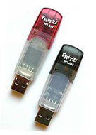

FRITZ!WLAN USB Stick
Dieser Artikel wurde für die folgenden Ubuntu-Versionen getestet:
Dieser Artikel ist größtenteils für alle Ubuntu-Versionen gültig.
Zum Verständnis dieses Artikels sind folgende Seiten hilfreich:
 Dieser Artikel beschreibt die Installation und Inbetriebnahme des Fritz-USB-WLAN-Sticks von AVM. Es gibt diesen Stick in unterschiedlichen Varianten, die mittels ihrer USB-ID identifiziert werden können (siehe WLAN/Karten/AVM). Der Stick ist für 32- und 64-bit-Systeme ab Ubuntu Version 8.10 mit dem Windowstreiber und WLAN/NdisWrapper in Betrieb zu nehmen. Der Linux-Treiber ist nicht mehr im System enthalten und kann durch Verletzung der GPL und weiterer Fehler im Quellcode auch nicht kompiliert werden. Artikel dazu unter Heise online.
Zusätzlich sind erweiterte Treiberoptionen und Problemlösungen beschrieben, die bei Übertragungsfehlern, Verbindungsabbrüchen und Installationsproblemen helfen können.
Zur Installation der erforderlichen Programm- und Treiberpakete empfiehlt es sich, eine Internetverbindung über ein Netzwerkkabel herzustellen. Die benötigten Programmpakete für NdisWrapper sind aus Platzgründen nicht mehr vollständig auf der Ubuntu Installations-CD bzw. dem ISO-Abbild enthalten und müssen manuell heruntergeladen, kopiert und installiert werden.
Installation des Windowstreibers¶
Es können die aktuellen Treiber (Liste) von AVM für 32-Bit deutsch  /englisch oder 64-Bit deutsch englisch oder auch die Dateien von der beiliegenden Treiber-CD verwendet werden. Die .exe-Datei muss, wie weiter unten beschrieben, vorab entpackt werden, um an die benötigten Treiberdateien zu gelangen. Alternativ kann auch direkt der optimierte Windowstreiber für 32-Bit oder ein älterer getesteter 64-bit-Treiber installiert werden.
/englisch oder 64-Bit deutsch englisch oder auch die Dateien von der beiliegenden Treiber-CD verwendet werden. Die .exe-Datei muss, wie weiter unten beschrieben, vorab entpackt werden, um an die benötigten Treiberdateien zu gelangen. Alternativ kann auch direkt der optimierte Windowstreiber für 32-Bit oder ein älterer getesteter 64-bit-Treiber installiert werden.
Vorbereitung für Offline-Installation¶
Für eine Offline-Installation werden die folgenden Paketdateien über einen externen Datenträger auf den Computer gebracht und anschließend installiert. Diese Paketdateien besitzen die Dateiendung .deb.
Vorbereitete Treiberpakete¶
Bereits zur Installation vorbereitete Treiberpakete für 32- und 64-bit-Systeme können hier  heruntergeladen werden.
heruntergeladen werden.
Treiber aus Windows-*.exe¶
Das verfügbare Treiberpaket von AVM (Links siehe oben) über eine Kabelnetzwerkverbindung herunterladen. Das Paket liegt dann im allgemeinen unter ~/Downloads. Alternativ mit einem anderen System herunterladen und mit Hilfe eines USB-Sticks nach Ubuntu kopieren. Das Paket kann nun mit dem Archivmanager entpackt werden. Dazu einfach den Dateimanager öffnen, einen Rechtsklick auf das *.exe-Paket ausführen und "hier entpacken" wählen.
Die benötigten Dateien liegen nun entsprechend der momentan verfügbaren Paketbezeichnung im Verzeichnis ~/avm_fritz!wlan_usb_stick_build_100906. In diesem Fall kann die enthaltene fwlan.inf (32-Bit) oder die fwlan4.inf (64-Bit) zur Installation auswählt werden.
Ältere Treiberpakete von der dem Stick beiliegenden Treiber-CD können möglicherweise nur mit cabextract oder umständlicher über Wine entpackt werden.
Treiber installieren¶
USB-Stick anschließen und den Treiber gemäß dieser Anleitung installieren NdisWrapper.
Installation überprüfen¶
Kontrolle, ob der Treiber mit Ndiswrapper in das System eingebunden ist. Einige Befehle im Terminal [2] erfordern Root-Rechte [8]. Im Verzeichnis /etc/ndiswrapper/<Name_der_inf-Datei> müssen sich diese Dateien befinden. Je nach verwendeter Treiberversion können die Dateinamen etwas abweichen.
057C:5601.F.conf
057C:6201.F.conf
fwlan.inf (fwlan64.inf oder fwlan4.inf bei 64-bit-Systemen)
avm_mod.inf bei Verwendung des optimierten 32-bit-Treibers
fwlanusb.sys
fwusb32.sys bei Verwendung des optimierten 32-bit-Treibers
fwusb1b.bin
Der entsprechende Terminalbefehl [2] dazu lautet:
find /etc/ndiswrapper/* # listet die installierten Dateien auf
Modul laden (bei der Treiberinstallation über das grafische Werkzeug ndisgtk ist dies normalerweise nicht erforderlich):
sudo modprobe ndiswrapper # lädt ndiswrapper
Ist Ndiswrapper korrekt mittels DKMS installiert?
dkms status
Installierte Treiber kontrollieren:
ndiswrapper -l # Kontrolle des Treibers
Die Ausgabe sollte in etwa so lauten:
fwlan : driver installed device (057C:5601) present
Ist eine Schnittstelle vorhanden?
iwconfig # Schnittstelleninformationen abfragen
Wenn ja, funktioniert der Treiber. Mit dem Network-Manager kann nun versucht werden, eine Verbindung aufzubauen.
Wenn nicht, über die Kerneldiagnostik nach dem Fehler schauen:
dmesg | grep ndis # Kernel-Log mit Filter für ndiswrapper abfragen
Weitere Hinweise dazu im NdisWrapper - Fehlersuche.
Wird der Stick am USB-Anschluß erkannt?
lsusb
Ausgabe sollte je nach verwendetem Gerätetyp etwa so aussehen:
Bus 001 Device 004: ID 057c:5601 AVM GmbH AVM FRITZ!WLAN Stick # oder Bus 001 Device 006: ID 057c:6201 AVM GmbH WLAN USB v1.1
Bei Typ 1.1 wird zunächst nur der Flash-Speicher erkannt und als CD-Rom Laufwerk eingehängt. Dieser Modus sollte nach ca. 20 Sekunden selbsttätig vom Stick gewechselt werden und das CD-Laufwerk verschwinden.
Bus 001 Device 005: ID 057c:62ff AVM GmbH WLAN USB v1.1 [no firmware]
Windowstreiber-Optionen¶
Bei Problemen mit Verbindungsabbrüchen oder Abstürzen können die Treibereinstellungen angepasst werden. Folgende Werte in den Konfigurationsdateien unter /etc/ndiswrapper/fwlan können geändert werden. Je nach verwendetem Typ (ID) des Sticks die Datei 057C:5601.F.conf oder 057C:6201.F.conf bearbeiten [3].
Folgender Befehl im Terminal [2] zeigt Informationen zu den angeschlossenen USB-Geräten an und gibt Auskunft über die ID des Gerätes:
lsusb
Größe der Datenpakete¶
dot11FragmentationThreshold|4096
dot11RTSThreshold|4096
Die Werte heruntersetzen, z.B. 2048. Minimalwert ist 256. Bei geringer Signalstärke haben sich Werte um 1024 bewährt.
Turbo-Modus¶
Mode4x|1
Aktiviert den Turbo-Modus, bzw. bei AVM den g++ Modus. Es wird versucht, eine höhere Datenübertragung zu erzielen. Dieses Verfahren ist nicht genormt, und manche Router haben damit Probleme.
Mögliche Werte:
Mode4x|1= g++ Modus eingeschaltetMode4x|0= g++ Modus ausgeschaltet
Stromsparfunktion¶
Fällt die Datenrate trotz guter Signalstärke regelmäßig ab, kann folgende Einstellung dafür überprüft werden.
dot11PowerMode|0
Mögliche Werte:
0 = immer volle Leistung (Continuous Access Mode)
1 = maximale Energiesparfunktion (Maximum Power Save) - Diese Einstellung kann zu Systemabstürzen und Verbindungsabbrüchen führen.
2 = eingeschränkte Energiesparfunktion (Fast Power Save) - Diese Einstellung kann zu Systemabstürzen und Verbindungsabbrüchen führen.
Netzwerktyp¶
dot11NetworkType|3
Für ältere Router, die nur 802.11b/11 Mbit unterstützen, und wenn es Probleme mit dem Verbindungsaufbau gibt.
Mögliche Werte:
1 = Übertragung 802.11b bis 11 Mbit
3 = Übertragung 802.11b und g (automatisch) bis 54 Mbit
Geänderte Einstellungen können im laufenden Betrieb mit folgenden Befehlen im Terminal [2] übernommen werden:
sudo ifdown wlan0 # Schnittstelle abschalten sudo rmmod -f ndiswrapper # Treibermodul entladen sudo modprobe ndiswrapper # Treibermodul neu laden / Parameterübernahme sudo ifup wlan0 # Schnittstelle aktivieren
Nach erneuter Treiberinstallation oder einem Update des Treibers sind wieder die Vorgabewerte aus der verwendeten inf-Datei eingestellt.
Probleme und Fehlerquellen¶
Systemereignisse¶
Folgende Konfigurationen und Systemereignisse können zum Absturz bzw. zum "Einfrieren" des Systems führen:
Abschaltung der USB-Anschlüsse durch die Stromsparfunktion
Bereitschafts- oder Ruhezustand des Systems
Bereitschafts- oder Ruhezustand des Systems beim Schließen des Laptopdeckels
USB-Anschluss liefert nicht genug Strom bei älteren Rechnern mit USB-1.1-Anschlüssen oder zusätzliche Geräte am USB-Port
Stromaufnahme zu hoch¶
Der Stick arbeitet im "high power-Modus" bis 500 mA Stromaufnahme am USB-Port. Andere Geräte ohne eigene Stromversorgung, wie z.B. eine opt. Maus, Scanner oder ext. Festplatten sollten nicht am selben Port-Paar verwendet werden.
Bei Überschreitung des zulässigen Maximalstroms kann der USB-Controller die Versorgungsspannung abschalten. Verbindungsabbrüche oder Systemabstürze können die Folge sein. Alternativ kann der Stick über einen USB-Hub mit separater Stromversorgung angeschlossen werden.
Um die Stromaufnahme zu reduzieren, kann der g++ Modus abgeschaltet, der Übertragungsmodus auf 802.11b bis 11 Mbit herabgesetzt und die Größe der Datenpakete auf 1024 eingestellt werden. Der Stick erwärmt sich dann auch nicht mehr so stark. Die Akkulaufzeit bei Laptops wird dadurch ebenfalls etwas verlängert.
USB-Verlängerungskabel¶
Der Fritz!Wlan-USB-Stick reagiert relativ empfindlich auf verschiedene USB-Verlängerungskabel. Auf jeden Fall sollte ein USB-2.0-Kabel benutzt werden, damit sind mehrere Meter Kabel möglich.
Verbindungsabbrüche¶
Ist der Seitenaufbau fehlerhaft, unvollständig oder treten bei längerer Übertragung größerer Datenmengen Verbindungsabbrüche auf, kann der MTU-Wert herabgesetzt werden. Der Wert kann im entsprechenden Verbindungsprofil des Network-Manager eingestellt werden.
nm-connection-editor
Bei manueller Konfiguration der Schnittstelle wird die Datei /etc/network/interfaces mit einem Editor [3][8] bearbeitet und folgende Zeile eingefügt:
pre-up ifconfig wlan0 mtu 1492
Alternativ kann der Parameter über das Startscript rc.local gesetzt werden.
ifconfig wlan0 mtu 1492 exit 0
Die Schnittstelle wlan0 ist ggf. anzupassen.
Überprüfung der Einstellungen im Terminal [2] mit
iwconfig wlan0
PCI USB-Karte¶
Der Stick kann auch an einer zusätzlichen PCI-USB-Karte betrieben werden. Allerdings funktioniert damit nicht jeder Treiber.
Automatische Hardwareerkennung¶
Eine neuere Variante des WLAN-Sticks von AVM mit der ID 056c:6201 wird kurzzeitig als CD-ROM-Laufwerk in das System eingebunden. Der automatische Start des Funknetzwerks wird damit verhindert. Das liegt an der "AVM Stick & Surf-Technologie". Der Stick hat einen kleinen Flash-ROM Bereich mit einem Startprogramm für die automatische Konfiguration des WLAN integriert. Daten für die Verschlüsselung können dort direkt über den USB-Anschluss einer Fritz-Box eingespielt werden. Die automatische Konfiguration des WLAN funktioniert aber nur unter Windows.
Der Stick aktiviert zuerst nur diesen Speicherbereich, und das Gerät (Geräte-ID 056c:62FF) wird vom Linux-System als SCSI CD-ROM, Laufwerk scd0, in das System eingebunden. Nach Ablauf der vorgegebenen Zeit wird dieser Vorgang durch den Stick abgebrochen, und die "normale" WLAN-Funktion aktiviert (Geräte-ID 056c:6201). Das CD-ROM Laufwerk verschwindet mit der Systemmeldung "unsave device removal". Danach wird das Funknetzwerk automatisch gestartet. Dieser Vorgang kann nicht unterbunden werden. Sollte das Laufwerk nicht automatisch ausgehängt werden, hilft es nur, den Stick kurz abzuziehen.
Ndiswrapper startet nicht¶
Ndiswrapper startet u.U. nicht automatisch bei Systemstart. Unter Ubuntu 11.10 wird die benötigte Konfigurationsdatei nicht mehr im entsprechenden Ordner angelegt, kann aber manuell kopiert werden. Dann wird der Stick auch bei Systemstart direkt erkannt.
sudo cp /etc/modules.conf /etc/modprobe.d/ndiswrapper.conf
Alternativ kann eine udev-Regel angelegt werden [2].
sudo touch /etc/udev/rules.d/10-wlan_stick.rules
Inhalt[3]:
# UDEV-Rule for AVM Fritz-Stick
# load Ndiswrapper
SUBSYSTEM=="usb", ATTR{idVendor}=="057c", ATTR{idProduct}=="5601", RUN+="/usr/sbin/ndiswrapper"
SUBSYSTEM=="usb", ATTR{idVendor}=="057c", ATTR{idProduct}=="6201", RUN+="/usr/sbin/ndiswrapper"Udev-System neu starten:
sudo service udev reload
Um Ndiswrapper bei Systemstart grundsätzlich in den Kernel zu laden, kann das Modul auch in die Konfigurationsdatei /etc/modules eingetragen werden.
echo ndiswrapper | sudo tee -a /etc/modules
Initialisierungsfehler 22¶
Dieses Problem tritt oft bei bestimmten 32-bit- und 64-bit-Windows-Gerätetreibern auf.
ndiswrapper: probe of 0000:00:08.0 failed with error -22
Abhilfe schafft eine manuelle Installation von Ndiswrapper Version 1.57. Anleitung in WLAN/NdisWrapper und ein entsprechendes Beispiel im Forum. Alternativ kann ein Initialisierungsskript verwendet werden.
 Übersichtsseite
Übersichtsseite- Erstellt mit Inyoka
-
 2004 – 2017 ubuntuusers.de • Einige Rechte vorbehalten
2004 – 2017 ubuntuusers.de • Einige Rechte vorbehalten
Lizenz • Kontakt • Datenschutz • Impressum • Serverstatus -
Serverhousing gespendet von